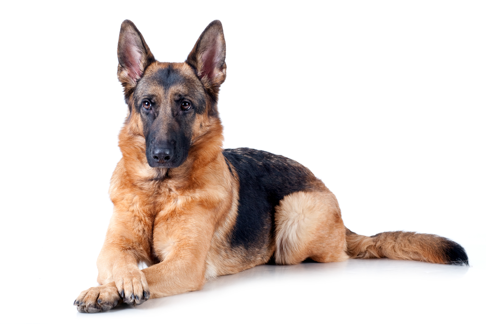

Double Coated Dogs
Double coated dogs have two layers of hair. There is a longer, outer layer of guard hair and a shorter, softer layer close to the skin. They shed out dead hairs, but an accurate method of brushing will help remove them. The outer guard hairs are weather proof and protect against moisture - catching precipitation from the seasons and holding it away from the body. These guard hairs also work to keep cold and heat away from the body. A well-maintained inner coat provides a layer that aids air to regulate temperature. This works in both cold and warm weather.
Examples of double coated dog breeds:
- Husky
- Chow Chow
- Shiba Inu
- Samoyed
- Pomeranian
- Collie
- German Shepard
- Shetland Sheepdog
- Bernese Mountain Dog
- Great Pyrenees
- Saint Bernard

